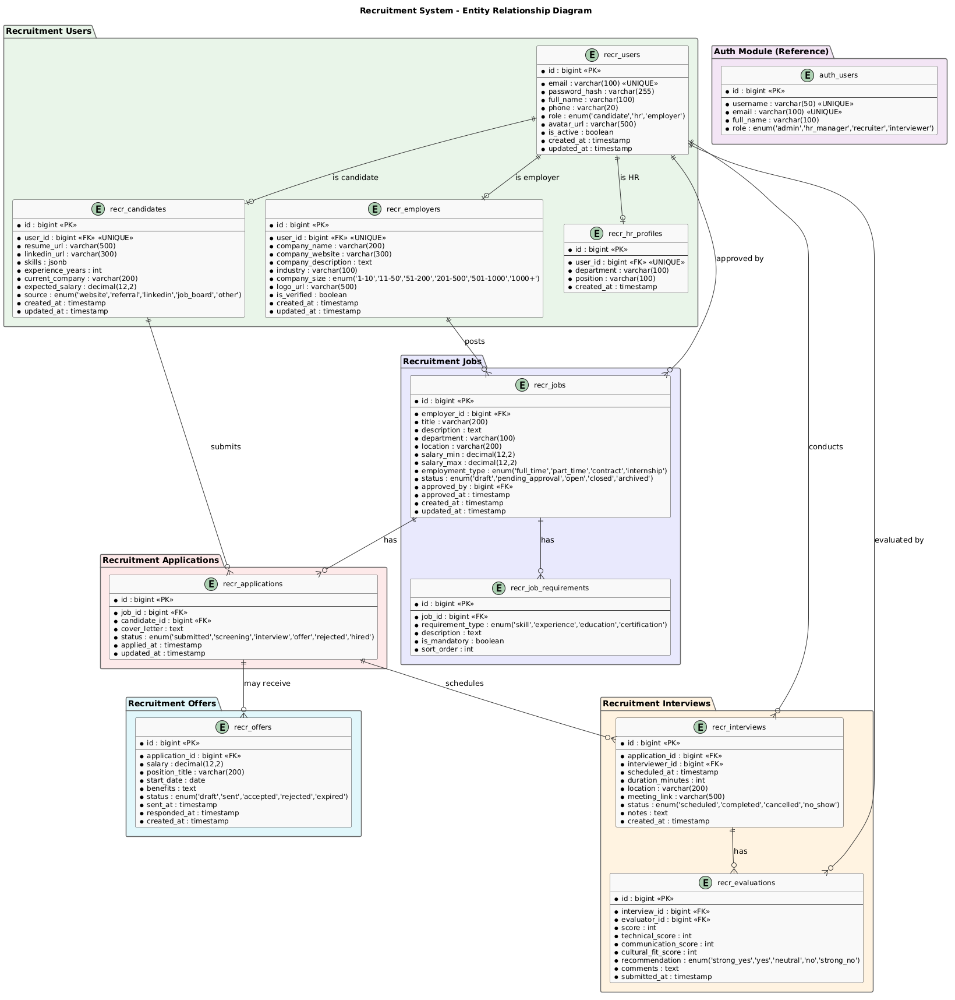

Database Design Document
Recruitment Module
RECR
1. Overview
1.1 Purpose
This document defines the database design for the Recruitment module (database: recr_db).
1.2 Requirements Addressed
| SRS Requirement | Database Solution |
|---|
| FR-001, FR-016 User Registration | recr_users, recr_candidates, recr_employers tables |
| FR-017, FR-018 Job Management | recr_jobs, recr_job_requirements tables |
| FR-004, FR-005 Application Management | recr_applications table |
| FR-010 Interview Scheduling | recr_interviews table |
| FR-011 Evaluation | recr_evaluations table |
| FR-012 Offer Management | recr_offers table |
1.3 ERD Diagram

Figure 1: Recruitment ERD (3 Roles)
2. Schema Design
2.1 Database Strategy
| Aspect | Decision |
|---|
| Database | recr_db |
| Table naming | recr_<table_name> |
| Primary keys | BIGSERIAL (auto-increment) |
| Timestamps | created_at, updated_at with NOW() default |
| JSON fields | JSONB for flexible data (skills, benefits) |
2.2 Tables
Table: recr_users - Core User Table (All Roles)
| Column | Type | Nullable | Default | Description |
|---|
| id | bigint | NO | nextval('recr_users_id_seq') | Primary key |
| email | varchar(100) | NO | - | Unique email |
| password_hash | varchar(255) | NO | - | Hashed password |
| full_name | varchar(100) | NO | - | Full name |
| phone | varchar(20) | YES | - | Phone number |
| role | enum | NO | - | candidate, hr, employer |
| avatar_url | varchar(500) | YES | - | Avatar image URL |
| is_active | boolean | NO | true | Account status |
| created_at | timestamp | NO | NOW() | Creation timestamp |
| updated_at | timestamp | NO | NOW() | Last update timestamp |
CREATE TABLE recr_users (
id BIGSERIAL PRIMARY KEY,
email VARCHAR(100) NOT NULL UNIQUE,
password_hash VARCHAR(255) NOT NULL,
full_name VARCHAR(100) NOT NULL,
phone VARCHAR(20),
role VARCHAR(20) NOT NULL CHECK (role IN ('candidate','hr','employer')),
avatar_url VARCHAR(500),
is_active BOOLEAN NOT NULL DEFAULT true,
created_at TIMESTAMP NOT NULL DEFAULT NOW(),
updated_at TIMESTAMP NOT NULL DEFAULT NOW()
);
Table: recr_candidates - Candidate Profile
CREATE TABLE recr_candidates (
id BIGSERIAL PRIMARY KEY,
user_id BIGINT NOT NULL UNIQUE REFERENCES recr_users(id),
resume_url VARCHAR(500),
linkedin_url VARCHAR(300),
skills JSONB DEFAULT '[]',
experience_years INT DEFAULT 0,
current_company VARCHAR(200),
expected_salary DECIMAL(12,2),
source VARCHAR(20) CHECK (source IN ('website','referral','linkedin','job_board','other')),
created_at TIMESTAMP NOT NULL DEFAULT NOW(),
updated_at TIMESTAMP NOT NULL DEFAULT NOW()
);
Table: recr_employers - Employer Profile
CREATE TABLE recr_employers (
id BIGSERIAL PRIMARY KEY,
user_id BIGINT NOT NULL UNIQUE REFERENCES recr_users(id),
company_name VARCHAR(200) NOT NULL,
company_website VARCHAR(300),
company_description TEXT,
industry VARCHAR(100),
company_size VARCHAR(20) CHECK (company_size IN ('1-10','11-50','51-200','201-500','501-1000','1000+')),
logo_url VARCHAR(500),
is_verified BOOLEAN DEFAULT false,
created_at TIMESTAMP NOT NULL DEFAULT NOW(),
updated_at TIMESTAMP NOT NULL DEFAULT NOW()
);
Table: recr_hr_profiles - HR Profile
CREATE TABLE recr_hr_profiles (
id BIGSERIAL PRIMARY KEY,
user_id BIGINT NOT NULL UNIQUE REFERENCES recr_users(id),
department VARCHAR(100),
position VARCHAR(100),
created_at TIMESTAMP NOT NULL DEFAULT NOW()
);
Table: recr_jobs - Job Listings
CREATE TABLE recr_jobs (
id BIGSERIAL PRIMARY KEY,
employer_id BIGINT NOT NULL REFERENCES recr_employers(id),
title VARCHAR(200) NOT NULL,
description TEXT,
department VARCHAR(100),
location VARCHAR(200),
salary_min DECIMAL(12,2),
salary_max DECIMAL(12,2),
employment_type VARCHAR(20) NOT NULL CHECK (employment_type IN ('full_time','part_time','contract','internship')),
status VARCHAR(20) NOT NULL DEFAULT 'draft' CHECK (status IN ('draft','pending_approval','open','closed','archived')),
approved_by BIGINT REFERENCES recr_users(id),
approved_at TIMESTAMP,
created_at TIMESTAMP NOT NULL DEFAULT NOW(),
updated_at TIMESTAMP NOT NULL DEFAULT NOW()
);
Table: recr_applications - Job Applications
CREATE TABLE recr_applications (
id BIGSERIAL PRIMARY KEY,
job_id BIGINT NOT NULL REFERENCES recr_jobs(id),
candidate_id BIGINT NOT NULL REFERENCES recr_candidates(id),
cover_letter TEXT,
status VARCHAR(20) NOT NULL DEFAULT 'submitted' CHECK (status IN ('submitted','screening','interview','offer','rejected','hired')),
applied_at TIMESTAMP NOT NULL DEFAULT NOW(),
updated_at TIMESTAMP NOT NULL DEFAULT NOW(),
UNIQUE(job_id, candidate_id)
);
Table: recr_interviews - Interview Schedule
CREATE TABLE recr_interviews (
id BIGSERIAL PRIMARY KEY,
application_id BIGINT NOT NULL REFERENCES recr_applications(id),
interviewer_id BIGINT NOT NULL REFERENCES recr_users(id),
scheduled_at TIMESTAMP NOT NULL,
duration_minutes INT DEFAULT 60,
location VARCHAR(200),
meeting_link VARCHAR(500),
status VARCHAR(20) NOT NULL DEFAULT 'scheduled' CHECK (status IN ('scheduled','completed','cancelled','no_show')),
notes TEXT,
created_at TIMESTAMP NOT NULL DEFAULT NOW()
);
Table: recr_evaluations - Interview Evaluations
CREATE TABLE recr_evaluations (
id BIGSERIAL PRIMARY KEY,
interview_id BIGINT NOT NULL REFERENCES recr_interviews(id),
evaluator_id BIGINT NOT NULL REFERENCES recr_users(id),
score INT CHECK (score >= 1 AND score <= 10),
technical_score INT CHECK (technical_score >= 1 AND technical_score <= 10),
communication_score INT CHECK (communication_score >= 1 AND communication_score <= 10),
cultural_fit_score INT CHECK (cultural_fit_score >= 1 AND cultural_fit_score <= 10),
recommendation VARCHAR(20) CHECK (recommendation IN ('strong_yes','yes','neutral','no','strong_no')),
comments TEXT,
submitted_at TIMESTAMP NOT NULL DEFAULT NOW()
);
Table: recr_offers - Job Offers
CREATE TABLE recr_offers (
id BIGSERIAL PRIMARY KEY,
application_id BIGINT NOT NULL REFERENCES recr_applications(id),
salary DECIMAL(12,2) NOT NULL,
position_title VARCHAR(200) NOT NULL,
start_date DATE NOT NULL,
benefits TEXT,
status VARCHAR(20) NOT NULL DEFAULT 'draft' CHECK (status IN ('draft','sent','accepted','rejected','expired')),
sent_at TIMESTAMP,
responded_at TIMESTAMP,
created_at TIMESTAMP NOT NULL DEFAULT NOW()
);
Table: recr_job_requirements - Job Requirements
CREATE TABLE recr_job_requirements (
id BIGSERIAL PRIMARY KEY,
job_id BIGINT NOT NULL REFERENCES recr_jobs(id),
requirement_type VARCHAR(20) NOT NULL CHECK (requirement_type IN ('skill','experience','education','certification')),
description TEXT NOT NULL,
is_mandatory BOOLEAN DEFAULT true,
sort_order INT DEFAULT 0
);
3. Indexes
-- Users indexes
CREATE INDEX idx_recr_users_email ON recr_users(email);
CREATE INDEX idx_recr_users_role ON recr_users(role);
-- Candidates indexes
CREATE INDEX idx_recr_candidates_user_id ON recr_candidates(user_id);
CREATE INDEX idx_recr_candidates_skills ON recr_candidates USING GIN (skills);
-- Employers indexes
CREATE INDEX idx_recr_employers_user_id ON recr_employers(user_id);
CREATE INDEX idx_recr_employers_company ON recr_employers(company_name);
-- Jobs indexes
CREATE INDEX idx_recr_jobs_employer_id ON recr_jobs(employer_id);
CREATE INDEX idx_recr_jobs_status ON recr_jobs(status);
CREATE INDEX idx_recr_jobs_location ON recr_jobs(location);
-- Applications indexes
CREATE INDEX idx_recr_applications_job_id ON recr_applications(job_id);
CREATE INDEX idx_recr_applications_candidate_id ON recr_applications(candidate_id);
CREATE INDEX idx_recr_applications_status ON recr_applications(status);
-- Interviews indexes
CREATE INDEX idx_recr_interviews_application_id ON recr_interviews(application_id);
CREATE INDEX idx_recr_interviews_interviewer_id ON recr_interviews(interviewer_id);
CREATE INDEX idx_recr_interviews_scheduled_at ON recr_interviews(scheduled_at);
-- Evaluations indexes
CREATE INDEX idx_recr_evaluations_interview_id ON recr_evaluations(interview_id);
-- Offers indexes
CREATE INDEX idx_recr_offers_application_id ON recr_offers(application_id);
CREATE INDEX idx_recr_offers_status ON recr_offers(status);
4. Migrations
4.1 Migration Strategy
| Aspect | Decision |
|---|
| Tool | Drizzle ORM (drizzle-kit) |
| Database | recr_db |
| Rollback | Required for every migration |
4.2 Migration Order
| Order | Migration | Description |
|---|
| 1 | 001_create_users.sql | Create recr_users table |
| 2 | 002_create_candidates.sql | Create recr_candidates table |
| 3 | 003_create_employers.sql | Create recr_employers table |
| 4 | 004_create_hr_profiles.sql | Create recr_hr_profiles table |
| 5 | 005_create_jobs.sql | Create recr_jobs and recr_job_requirements |
| 6 | 006_create_applications.sql | Create recr_applications table |
| 7 | 007_create_interviews.sql | Create recr_interviews table |
| 8 | 008_create_evaluations.sql | Create recr_evaluations table |
| 9 | 009_create_offers.sql | Create recr_offers table |
| 10 | 010_create_indexes.sql | Create all indexes |
5. Data Dictionary
| Table | Description | Resolves | Est. Rows (Y1) |
|---|
| recr_users | User accounts (all roles) | FR-001, FR-002, FR-016 | 15,000 |
| recr_candidates | Candidate profiles | FR-006, FR-007 | 10,000 |
| recr_employers | Employer company profiles | FR-016 | 500 |
| recr_hr_profiles | HR user profiles | - | 50 |
| recr_jobs | Job listings | FR-017, FR-018 | 2,000 |
| recr_applications | Job applications | FR-004, FR-005 | 25,000 |
| recr_interviews | Interview sessions | FR-010 | 8,000 |
| recr_evaluations | Interview evaluations | FR-011 | 8,000 |
| recr_offers | Job offers | FR-012 | 2,000 |
| recr_job_requirements | Job requirements | FR-017 | 5,000 |
6. Backup & Recovery
Refer to system-level backup strategy. This module's data is part of recr_db.
7. Performance Tuning
| Aspect | Configuration |
|---|
| Connection pooling | pg-pool with max 20 connections |
| Query caching | Redis for frequent job listings |
| Search | Elasticsearch for job and candidate search |
| JSON indexing | GIN index on recr_candidates.skills |
| Pagination | Cursor-based for large result sets |